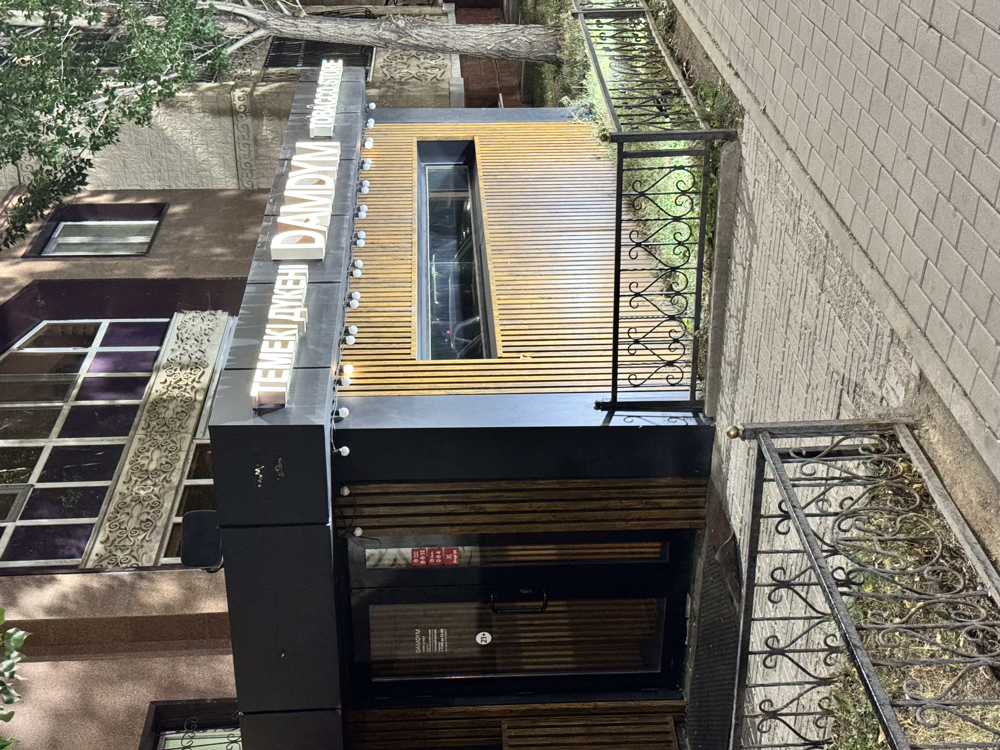

Catalog & Cart
Explore current stock in our Catalog or review your selected items in your Cart.
DAMDYM
DAMDYM is a local neighborhood shop specializing in tobacco products, hookah blends, coals, and lifestyle accessories. Located conveniently on Turkestan 32 street, we provide a reliable selection of top domestic and imported brands for adult customers.
Browse our catalog online to view prices, check stock availability, submit inquiries, or order products directly for home delivery or store pickup.

Explore current stock in our Catalog or review your selected items in your Cart.
Read product announcements, brand highlights, and price tables on our News page.
Join flavor discussions in the Forum or ask questions through our Q&A section.
We are open daily from 10:00 AM to 11:00 PM. Visit us in person at Turkestan 32 street for direct consultations and flavor recommendations from our staff.